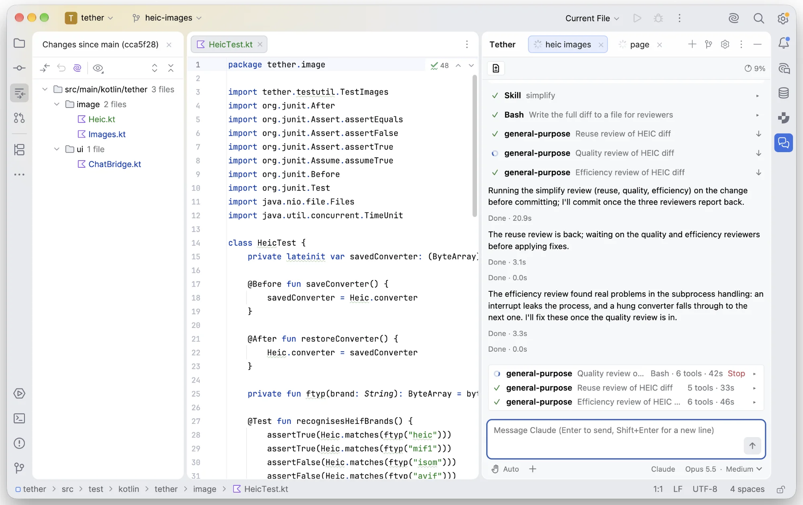

JetBrains IDE plugin
Tether for coding agents
Free and open source under the MIT License
A native chat panel in JetBrains IDEs for Claude Code or another ACP agent, using the install and login you already have.

Many chats at once
Each chat gets its own tab, including chats in separate git worktrees.
Links and diffs
Files the agent reads or edits are links, and every edit has a diff.
Knows what you're doing
Your current file, selection and caret, and what you edited or did in git between messages.
Uses the IDE's tools
Diagnostics, find usages, quick fixes, and rename and move refactorings.
Catches its own errors
Errors in the agent's edits are reported back to it in the same turn.
Rewind
Revert files, the conversation or both to how they were before any message.
Install
Tether needs a 2026.2 JetBrains IDE (build 262 or later) and Claude Code installed and logged in.
- In the IDE, open Settings → Plugins, click ⚙︎ and choose Manage Plugin Repositories…
- Add this URL:
https://atlipall.github.io/tether/updatePlugins.xml - Search the Marketplace tab for Tether, install it and restart the IDE.
New versions then appear as regular plugin updates in the IDE.
Latest version: {{VERSION}}